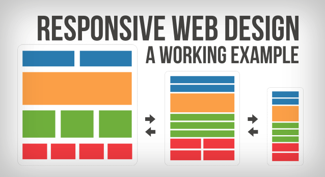
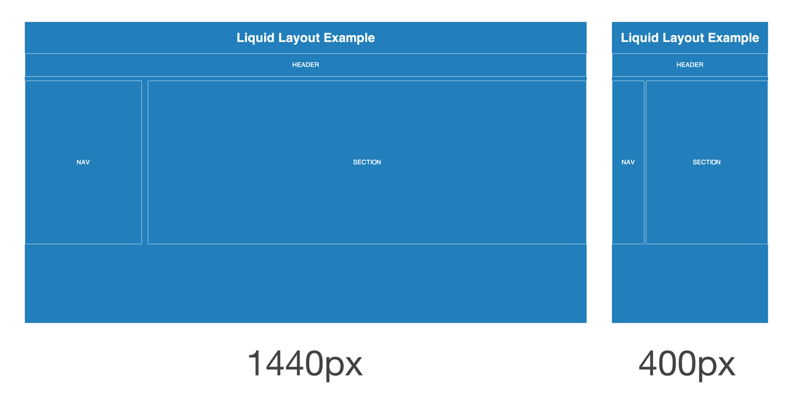

OUTCOME 2 : Undertake user requirements analyses
1. Identify and categories the different web sites and its functions.
Nowadays, there are tons of websites with different function such as blog website, business website, eCommerce and others. These websites are different category.
First, blog. Blog website is type of social and also like diary, you can upload anything to your page. For example, information about something, daily lifestyle or as a forum to discuss. This type of website speacially are for teenagers cause most of the teen like to share about their experience and lifestyle.
Second, business website. Business websites function is to presents a product of a company. To understanding the product, visitor can find out through the website.
Third, eCommerce websites are for online shopper. This kind of websites allow user to buy or sell through the internet. Buyer can transmit the cash on the website and seller just have to upload their product and set price. Ecommerce websites makes users more convenient, this way save a lot of times.
2. Describe the term ‘target audience’
Target audience is the person who is interested in our product, service or is a specific group of people within is the target of market, published readers are also means target audience.
3. Describe the term ‘house style’
House style means to have own stylistic on a product or other creation. For example, a company have their own logo to help customers to recognise the brand or consistent use of text type, graphics, colours and many thooughout of work.

4. Identify and explain the different page layout styles for different web sites.
Nowadays, many websites have different layout styles. Most common layout style are responsive, liquid layout and others. Responsive layout, this layout is generally referred to mobile layout, which get expands or contracts in width. If the browser goes beyond the width as defined by media query breakpont, then page layout will change drastically to suit a wide or narrow width. Then, Liquid layouts make it easier to design content for multiple page sizes, orientations, or devices. Apply liquid page rules to determine how objects on a page are suited when you create the size, orientation, or aspect ratio.


5. Describe common development methodologies used by modern project managers and identify its advantages and disadvantages.
Modern project managers usually used common development methodogies such as Scrum and Waterfall, these have their advantages and also disavantages.
First, Waterfall is the most common methodology used because it is simple, easy to understand and use. The advantages of Waterfall is for some inflexible project in each phase has specific information to deliver and review process. Waterfall works well for smaller projects because it is well to understood. For disadvantages, once an application is in the testing stage, it is very difficult to go back and change something and it also uncertainty or complex. Besides that, Waterfall is not recommended for long continous project.
Next is Scrum, it is the most ensures effectvie use of time and money because time and money can be categories so that project manageable to sprints. In addtion, the team gets clear visibility through scrum meetings by standing up and gather in a circle. So that they catch up to each other and solving confusing and misunderstanding. Scrum also has few disadvantages, daily meetings sometimes are burden on members because members also have thier own things to do. For some reason most worry is member leaves the project in the middle, this bring huge negative affect on the project.

6. Propose tools/diagram used to establish well communication during requirement gathering phase.
In certain project, is needed propose tools such as Github. Github is a version control system which means when developers are creating something, that is able to make changes and releasing new version. Github can do communication during requirement gathering phase，makes lot easier to do discussion just on Github. So that members will not miss any important information.